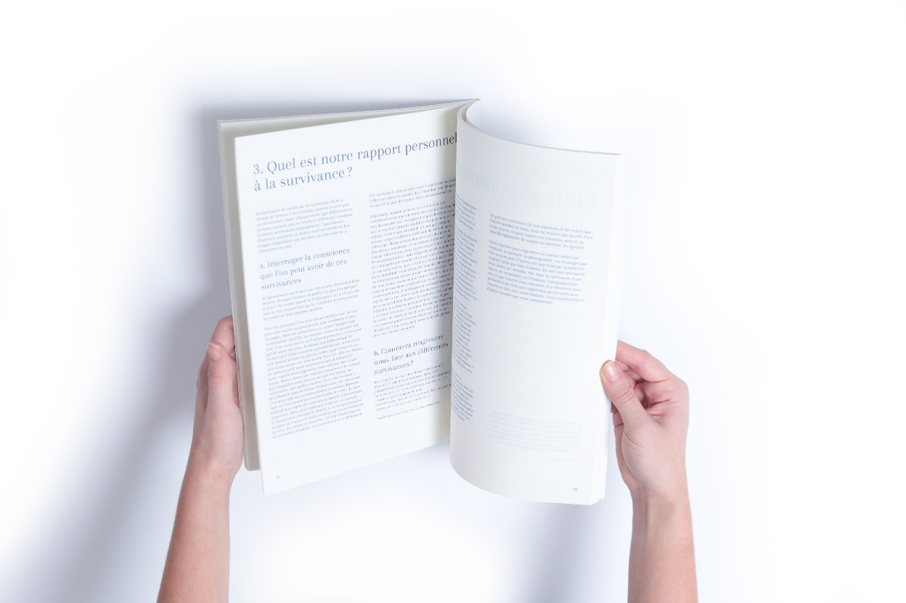
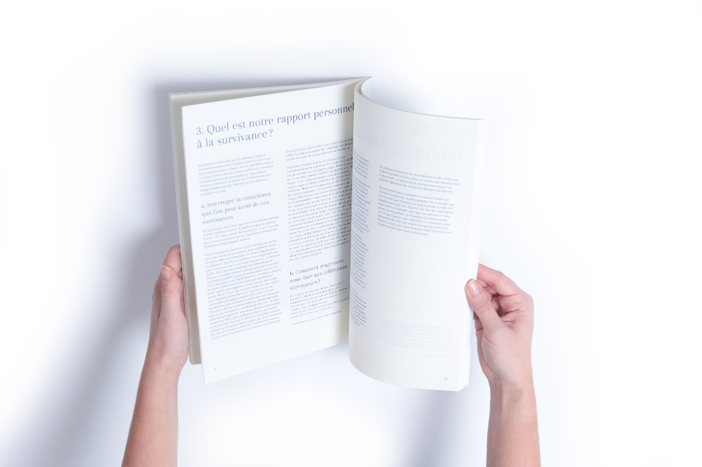
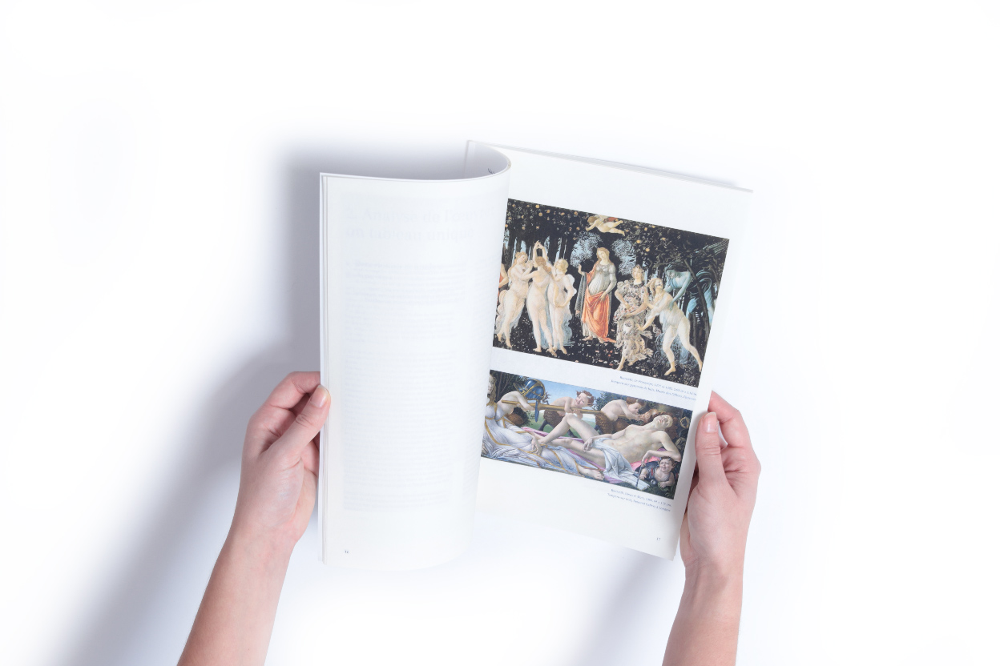
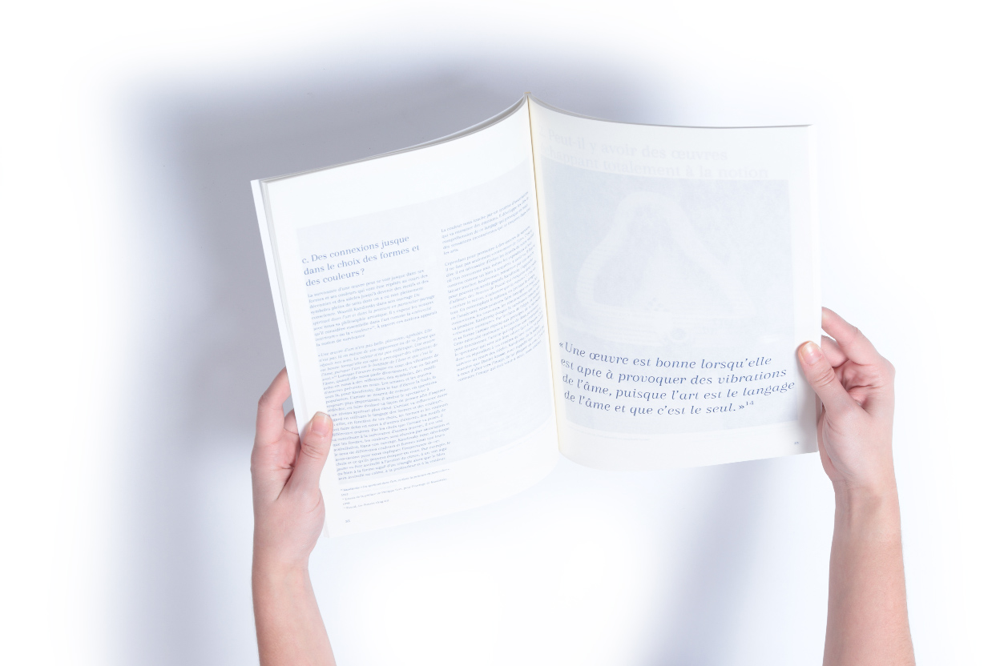
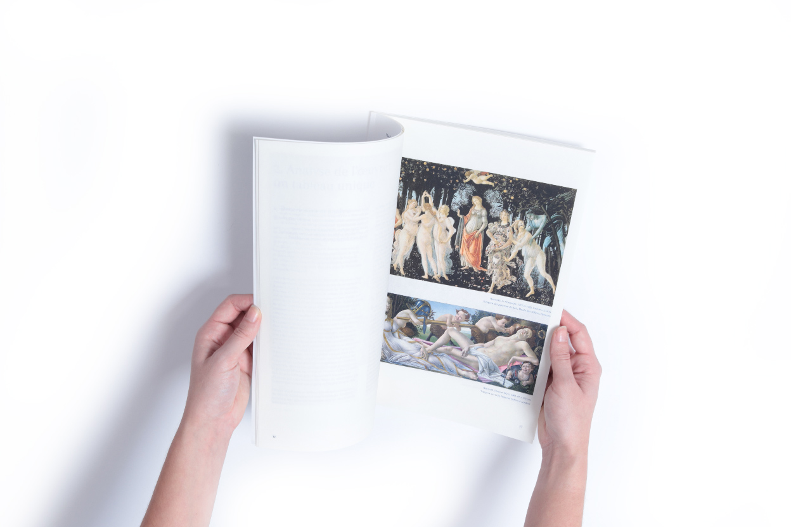
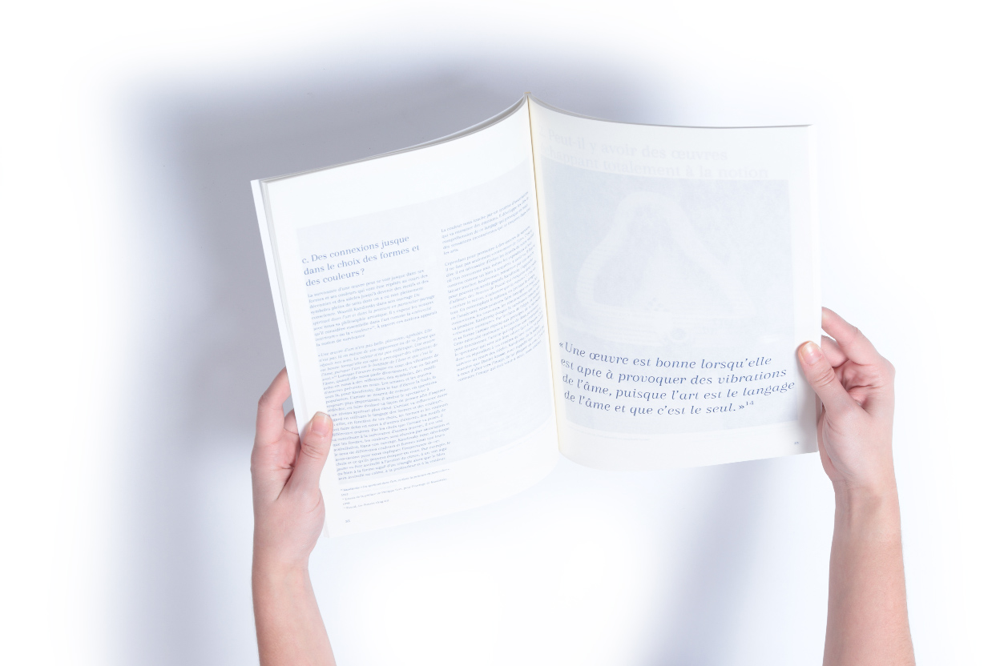

Survivance d'une œuvre
Janvier 2019 - Édition
Comment une œuvre peut-elle survivre au cours des siècles ? Quelle peut être l’influence de sa survivance dans notre façon de faire et de voir les œuvres ? Comment peut-elle agir en nous de façon plus ou moins consciente ? Quelle est la temporalité d’une œuvre ? De quelle façon une œuvre peut perdurer dans le temps ?
En s’appuyant sur l’étude de cas de La Naissance de Vénus de Botticelli, on peut analyser l’œuvre, les inspirations de l’artiste qui ont influencé la conception de cette peinture et l’héritage de ce tableau dans les siècles qui ont suivi jusqu’à aujourd’hui. À partir de ces réflexions, nous allons comprendre et expliquer la notion de survivance en nous appuyant de philosophes et de théoriciens de l’art comme Georges Didi-Huberman, Aby Warburg, Kandinsky ou encore Daniel Arasse.

 

 


